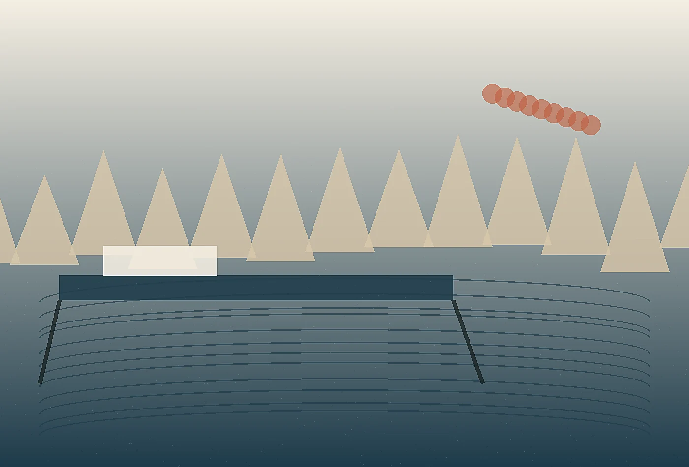
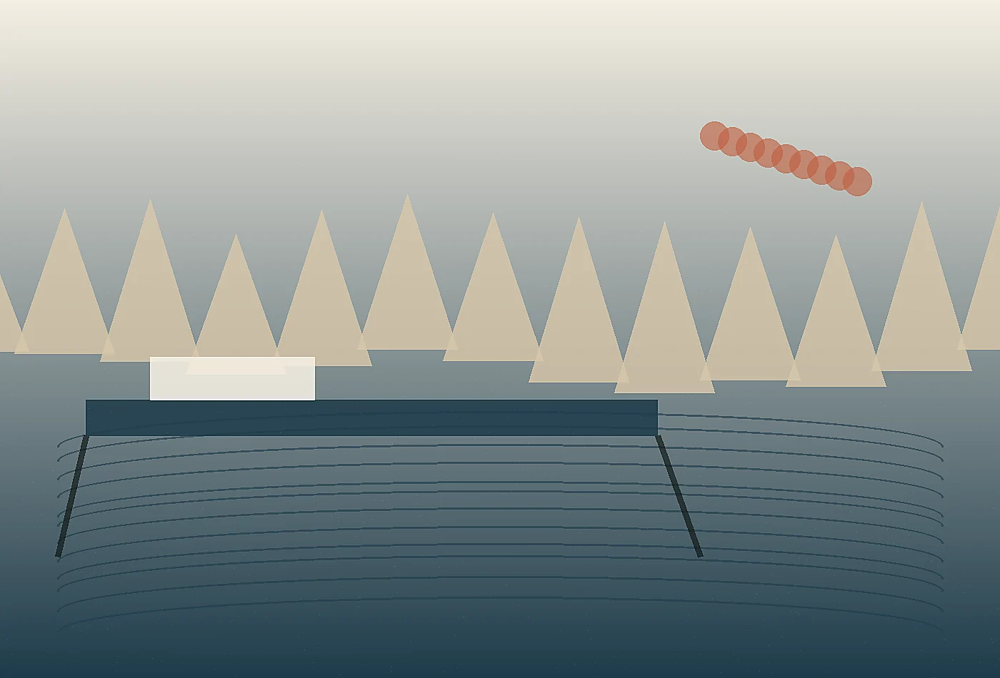

Wabi-sabi coastal strategy studio
Service One at Kanso Current
Waterfront Experience Audits gives teams a focused way to understand present conditions, sharpen priorities, and move from scattered observations to a confident plan.
Plan a quieter edge
Waterfront Experience Audits
We walk routes at commuter pace, guest pace, service pace, and storm pace, then translate the observations into a practical harbor improvement brief. This service is designed for leaders who know something needs to change but need the evidence, language, and sequence to change it responsibly. We clarify what is working, what is fragile, and which move should happen first.
Process
- Frame
We define the decision, audience, constraints, and evidence needed.
- Observe
We study the live environment, documents, stakeholders, and behaviors around the challenge.
- Design
We create options, prototypes, language, and operating guidance.
- Transfer
We package the system so teams can maintain and adapt it.
Best fit
This engagement fits organizations preparing for launch, repair, expansion, seasonal pressure, governance review, or a shift in audience expectation. It is especially useful when internal teams have strong knowledge but need a structured outside lens to convert that knowledge into aligned action.

Representative outputs
- Decision brief with priorities and tradeoffs
- Experience map or operating sequence
- Language samples and visual direction
- Implementation checklist with ownership notes
Expected result
The result is not a stack of inspiration. It is a usable system that makes the next decision easier, gives teams a shared vocabulary, and improves the experience for the people who rely on it. We leave room for adaptation because responsible strategy should stay alive after delivery.
Discuss this serviceWe also include a stewardship note for the people who inherit the work. It explains what should be reviewed monthly, what can be adjusted seasonally, and which details should not be changed without fresh observation. That small layer keeps the project from becoming a one-time presentation and helps managers defend thoughtful decisions when pressure returns.
A final review translates the work into plain operating language: what to watch, who owns each adjustment, and how to judge whether the change is reducing friction. That clarity is especially important in waterfront settings, where seasonal staff, public partners, vendors, and visitors all interact with the same physical cues in different ways.